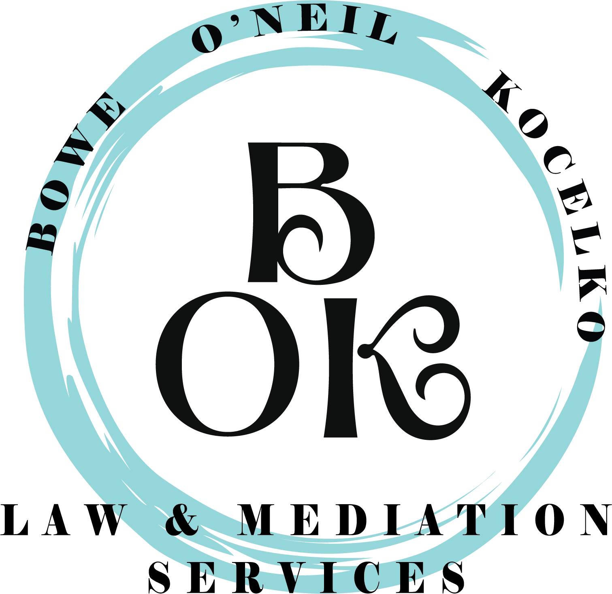

BOK Law & Mediation Services · Social Content
Back-to-school routines can expose small gaps in a co-parenting plan very quickly.
When children move between two homes, a missed school email, an unclear pickup plan, or a last-minute activity can create stress for everyone. A short planning conversation now can make the first weeks of school feel much more predictable.
Before the first bell, it may help to confirm:
Handoffs: Where and when will school-day exchanges happen?
School communication: Who receives teacher messages, forms, and calendar updates?
Activities and expenses: How will new commitments and costs be discussed?
Schedule changes: How will updates be shared directly and in writing?
The goal is not a perfect schedule. It is a clear, child-focused routine that keeps children out of the middle and gives both households the same information.
Every family and parenting plan is different. If the written plan no longer matches daily life, consider getting advice specific to your situation before making lasting changes.
This post is for general educational purposes only and is not legal advice.
BOK Law & Mediation Services · Social Content
A structured conversation can help separate what matters most from what has kept people stuck.
Four ways to prepare for a useful mediation conversation
Mediation does not require two people to agree on every detail before they begin. It creates a structured place to identify what matters, understand where the differences are, and explore workable next steps.
A little preparation can make that conversation more useful:
Separate priorities from preferences. Know what is essential and where you may have room to move.
Bring the facts. Calendars, account information, and other relevant documents can keep the discussion grounded.
Think beyond positions. “I need stability” can open more options than “It has to happen my way.”
Give important decisions room. A thoughtful pause can be more productive than an answer made under pressure.
Turning the page does not mean rewriting the past. Sometimes it simply means choosing a clearer way to decide what comes next.
This post is for general educational purposes only and is not legal advice.
BOK Law & Mediation Services · Social Content
There is no need to manufacture a perfect memory. Steady, simple time together is worth celebrating.
August in Pittsburgh has its own rhythm: one more evening outside, one more trip for ice cream, and the first hints that school routines are almost back.
For families moving through change, simple traditions can feel especially grounding. They do not need to be elaborate:
• A walk after dinner
• A favorite meal at the kitchen table
• A library stop before the weekend
• Ten phone-free minutes to hear about everyone’s day
There is no need to manufacture a perfect summer memory. A calm Friday, a familiar routine, and a little time together are worth celebrating.
However your family looks and wherever this season has taken you, we hope the weekend brings a few ordinary moments that feel good.
Happy Family Friday, Pittsburgh.